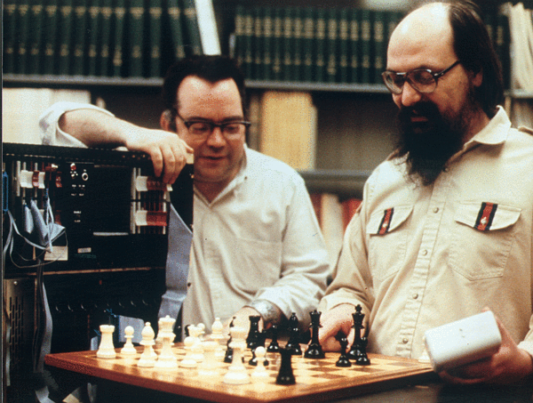

USA
Ken Thompson's work on computer games is best known in the chess world: in particular his Belle series of chess-playing machines, and then for his endgame analyses. However, his game-inspired work has been intertwined, sometimes in surprising ways, with many of his broader technical contribution to the computer world.
Throughout his career at the Labs, Ken devoted amazing energy to games of various kinds. Most significant for his future was Space Travel (Ritchie, 2001), a simple navigation entertainment that featured a space ship centered on a graphics screen showing a solar system with a sun, planets, and moons, in which the object was to land on a planet or moon.
This trivial game's interest is magnified only because it led Ken to take over an already-aging Digital Equipment PDP-7 computer. Once he had established squatter's rights over the machine and had learned how to generate programs for it, he wrote the first version of the Unix system. He had wanted to build his own operating system for some time; free access to the PDP-7 provided a home for it. Once Unix was running, games and recreations appeared soon.
Some of the things Ken wrote on the PDP-7 by 1969 include
Once we had moved to the PDP-11, and Unix was beginning to achieve some visibility, Ken continued various game-related activities. Some were just simple text interactions, like a Blackjack opponent, or a rewriting of the "Hunt-the-Wumpus" game. Many of these were written for his son Cory, then at just the age to play with them. Some were not games as such, but recreational demos: he wrote an interpreter for the Snobol language, and illustrated it with a program that solved the Instant Insanity puzzle.
Some of his programs were one-off solutions to various problems garnered by Martin Gardner's Mathematical Games column in Scientific American, like a search for strategies in the David Gale game of Chomp.
Ken's computer chess interest began early--he wrote a chess-playing program mentioned in Unix's first edition manual (1971). This earliest effort was purely in software, but fairly soon he began to build hardware to help out: the various hardware-assisted Belle programs. The earliest hardware was almost purely a move-generator.
Later versions began to incorporate increasingly sophisticated board evaluation and parts of the tree searching algorithm in the programmed logic. Still later, he began his long-term endgame database project.

Picture caption: Belle, Joe Condon and Ken Thompson revisiting the 1978 ACM BLITZ 6.5-Belle game (1982).ICGA's footnote to caption:
ACM CCC, Washington DC, Round 4, Dec. 5th, 1978: ECO C48, Four Knights. 1. e4 e5, Nf3 Nc6, 3. Nc3 Nf6 4. Bb5 Nd4 5. Bc4 Bc5 6. Nxe5 Qe7 7. Bxf7+ Kf8 8. Ng6+ hxg6 9. Bc4 Nxe4 10. O-O Rxh2!! {cf. the photo} 11. Kxh2 {hastening the loss} Qxh4+ 12. Kg1 Ng3 13. Qh5 {ineffectual delay} gxh5 14. fxg3+ Nf3# {perhaps uniquely blocking a check, giving a double check and mating simultaneously; "the most beautiful combination created by a computer program to date... computer chess witnessed the start of a new era." (Levy and Newborn, 1991)}.
Ken was and is amazingly productive, and became involved in many things. Often the diversions sparked by games created economically productive research. If the most obvious was the take-over of the PDP-7, others are less visible; the same semi-automated wire-wrap machine that Ken and Joe Condon assembled was used to construct not only Belle, but also much other research hardware used in Bell Labs, for example evaluation of Ising models in the physics of spin glasses.
In more recent years, Ken spent much time on the software-engineering aspects of clever compression and decompression of digital music, based on algorithms and research done by a nearby group in AT&T and now Lucent. In the course of this visibly company-related work, he also collected an enormous quantity of digitally-encoded music, mostly for his own enjoyment. No, none of it came from or made available to Napster.
When the chess aspect of Ken's career became visible, and in particular when Belle began doing well in computer chess tournaments, our management must have worried a bit about whether we wanted publicity about developing a champion chess-playing machine. So far as I know, these worries weren't expressed to Ken, even in the face of a hilarious fake memo, written on the real (albeit stolen) letterhead of AT&T's chairman.
ICGA's caption is just "The fake memo", accompanied by their footnote (based on DMR information):
Some background: In 1978, AT&T was rather closely regulated both by the federal government and in each state by their regulatory commissions. In particular, there were rules about being a communications company and not a computer (or for that matter fast-burger) company, the fear being that regulated business with fixed rates would subsidise entrepreneurial things. The California regulatory group was one of the particularly difficult ones. Wilma Soss was a perennial gadfly at shareholder meetings including AT&T's, asking peculiar and embarrassing questions out loud.The `memo' was created by Mike Lesk (of uucp, lex, and other things) on the board chairman's deButts' actual stationery. Sam Morgan, CSRC Director at the time, was half-way through the memo before he suspected a fake.
IBM, I've learned, went through the same managerial soul-searching over the Deep Blue research project that culminated in the famous Kasparov match. Both AT&T and IBM seem to have ended up winners (both in publicity and technology) by backing their researchers' unconventional tendencies.
Ken has always been a problem solver and a tool builder. He is equally excited by games, puzzles, and technology creation, and I don't think he really distinguishes among them.
Condon, J.H. and Thompson, K. (1983). BELLE. Chess Skill in Man and Machine. Edited by P. W. Frey. 2nd edition, pp. 82-118. Springer-Verlag, New York, N.Y. ISBN 0-3879-0790-4/3-5409-0790-4.
Grochow, J. M. (1972). Short Communications: MOO in Multics. Software--Practice and Experience, Vol. 2, No. 3, pp. 303-304.
Levy, D. and Newborn, M. (1991). How Computers Play Chess esp. pp 102-103. Computer Science Press, New York, N.Y. ISBN 0-7167-8239-1 / 0-7167-8121-2 (pbk.).
Patashik, O. (1980). Qubic: 4x4x4 Tic-Tac-Toe. Mathematics Magazine, Vol 53, No. 4, pp. 202-216. ISSN 0025-570X.
Ritchie, D. (2001). A description of Space Travel.
Thompson, K. (1971). UNIX Manual, First Edition.
{kind=link}